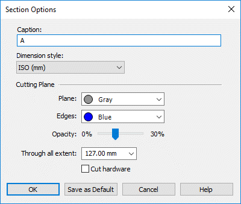

Section Options dialog box (3D sections)

- Caption
-
-
Specifies the section ID or name. This caption is appended to the section view number that is listed on PathFinder. Also, it is displayed in the graphics window with the cutting plane, which can be turned on or off from the Section Display Options dialog box.
-
A default caption consisting of a single capital letter is applied automatically and increments with each section view created, for example, A, B, C, D. You can add alphanumeric characters to the default caption, and you can delete the default caption and type one of your own. Captions do not have to be unique.
-
On PathFinder, the section views you create are listed in the “Section Views” collection and numbered sequentially in the order you create them, for example, Section 1, Section 2, Section 3. The section view caption you define here is appended to that sequence number. For example, Section 1 Caption_A, Section 2 Caption_B, Section 3 Caption_C.
-
- Dimension Style
-
Selects a dimension style for annotation related to the section and cutting plane.
- Cutting Plane
-
These cutting plane options—Plane, Edges, Opacity, Through All Extent, Cut Hardware—can be saved as default section annotation settings if you click the Save As Default button on this dialog box.
- Plane
-
Sets the face color of the cutting plane. The default value is obtained from the reference plane setting on the Colors page of the Solid Edge Options dialog box.
- Edges
-
Sets the edge color of the cutting plane. The default value is obtained from the reference plane setting on the Colors page of the Solid Edge Options dialog box.
- Opacity
-
Sets the opacity of the cut plane to a value from 0 (outline only) to 30 percent. The default value is obtained from the reference plane setting on the View page of the Solid Edge Options dialog box.
- Through All Extent
-
Controls the display length of the annotation cutting plane, not the cut itself. This applies only when the Through All Extents option on the command bar is used to define the section cut.
- Cut Hardware
-
This option determines whether hardware parts, such as bolts, nuts, and washers, are cut or not.
Select this check box to cut any parts in the view that have been designated as 'hardware.' When cleared, parts marked as hardware are not cut.
If you change this setting for an existing view, the section is recomputed and redisplayed automatically.
Note:Setting the Hardware Part option on the Project page of the File Properties dialog box designates a part as 'hardware'.
- Set As Default
-
Saves the cutting plane options—Plane, Edges, Opacity, Through All Extent, and Cut Hardware—as default section annotation settings.
How do I
Create a 3D section view (synchronous environment)Create a 3D section view (ordered environment)
Edit a 3D section view
Apply or remove a section cut
Expose a 3D section in a drawing
Create a section view using non-associative planes
Create a section view using associative planes
Learn more
3D section views of modelsLook up more details
3D section view editing commandsProperties command (3D section views)
Section Display Options command (3D section views)
Section Display Options dialog box
Section command bar (synchronous environment)
Section command bar (ordered environment)
Edit Profile command (3D section views)
Section command (Part, Sheet Metal, and Assembly)
Section by Plane command
Section by Plane command bar
Section by Plane Options dialog box